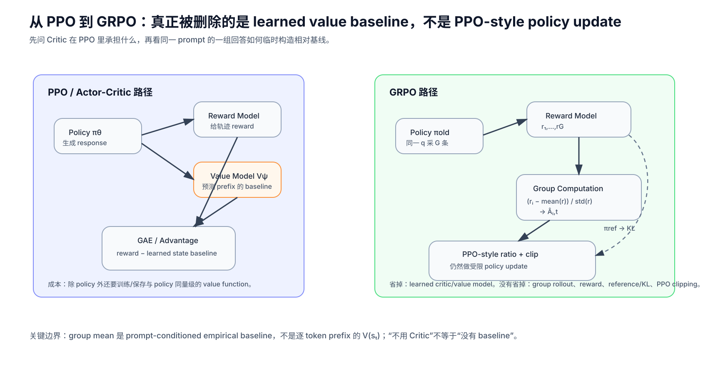
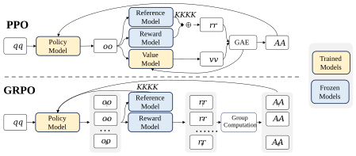
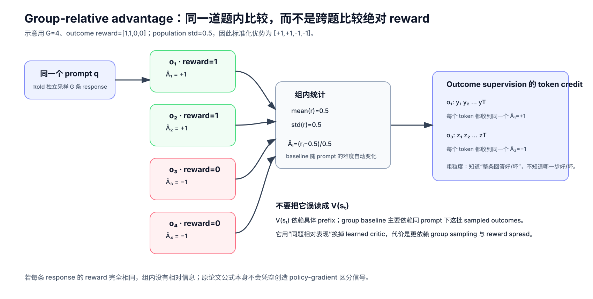
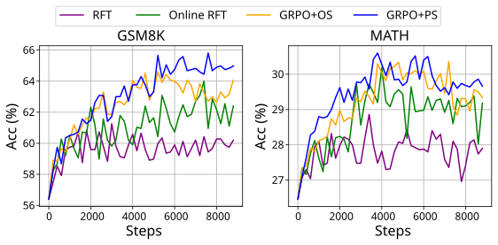
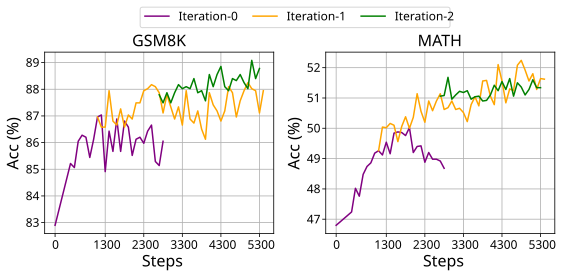
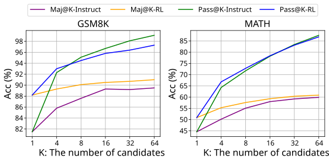

DeepSeekMath / GRPO：真正被删掉的是 Critic，不是 PPO 的 Policy Optimization
论文：DeepSeek-AI, DeepSeekMath: Pushing the Limits of Mathematical Reasoning in Open Language Models，本文以 arXiv v3（2024-04-27）为基线。
类型：A · 原始方法论文下钻。DeepSeekMath 本身同时包含数学预训练与完整模型实验，但本文只把其中 GRPO / RL 方法线 拆透。
一句话定位：GRPO 保留 PPO-style importance ratio 与 clipping，却不再训练 learned value model；它对同一 prompt 一次采样一组 responses，用组内 reward 的相对位置构造 advantage，再直接做 policy update。
为什么现在读它：DeepSeek-V3 和 DeepSeek-R1 都已经把 GRPO 当作后训练组件使用。模型报告只需要知道“它省掉 Critic”；到这里我们必须继续追问：Critic 原来到底干什么？组内 baseline 是否等于 Value Function？clip 和 KL 为什么还在？group normalization 有没有统计代价？
阅读导航：这是一篇“从 PPO 到 GRPO”的方法页
从哪里来
DeepSeek-R1 —— 先看 GRPO 为什么在 reasoning RL 中重要；
DeepSeek-V3 —— 看 GRPO 在更早的 DeepSeek post-training 中处于什么位置；
PPO 原论文 —— 如果 ratio / clip 的基本动机仍不牢，可作为更底层的算法依赖。
读完往哪里去
回 DeepSeek-R1，你会真正知道 R1-Zero / R1 的 group-relative update 在算什么；
后续可继续进入 DAPO / GSPO / verifier-based RL，观察 reasoning post-training 怎样围绕 GRPO 的长度偏置、采样效率与 token-level credit 继续演化；
若要系统回顾 PPO 的 GAE、Critic 与 old-policy 多轮更新，可再单开 PPO 原始方法专题，而不是把整篇 PPO 历史重复塞在这里。
本文重点
PPO 的 Critic / Value Model 究竟承担什么数学职责；
为什么“去掉 Critic”不等于“去掉 baseline”；
group-relative advantage 是怎样从同一 prompt 的一组回答得到的；
GRPO 为什么仍然保留 ratio、clip 与 reference-policy KL；
outcome supervision 为什么把同一个 response-level advantage 广播给所有 token；
process supervision 怎样重新获得更细的 credit assignment；
group mean 不是严格意义上的 \(V(s_t)\)，也不能随口宣称“完全无偏”；
DeepSeekMath 的实验究竟支持了 online sampling、gradient coefficient、process reward 与 iterative RL 的哪些结论。

自制解释图，不是原论文 Figure。先抓住最关键的结构变化：PPO 用 learned Value Model 估计 baseline；GRPO 改用同一 prompt 下多条 response 的组内相对 reward。Policy update 本身仍然是 PPO-style clipped surrogate。
1. 先别急着看 GRPO：PPO 为什么要有 Critic？
理解 GRPO 最容易犯的错误，是从一句：
“GRPO 不需要 Value Model。”
直接跳到：
“所以 Value Model 原来是多余的。”
不是。
Critic 在 PPO 里不是为了“让梯度存在”，而是为了得到一个低方差、尽量贴近当前 state 的 advantage estimate。
先从最原始的 policy gradient 开始。
给定 prompt：
模型生成 response：
在语言模型里可以定义：
整个 response 的概率：
假设最终 return 是：
目标：
使用 log-derivative trick：
又因为：
所以：
从这个式子看，没有 Critic 也能做 policy gradient。
真正的问题是：
同一个 state 下 rollout return 波动可能极大，直接拿 \(R\) 乘 score function，variance 很高。
1.1 为什么 baseline 可以减掉而不改变期望？
如果 baseline：
只依赖 state，不依赖当前 action，那么：
等于：
利用：
得到：
因此：
不会改变理想 policy-gradient 的期望，只会改变 variance。
最自然的 baseline 就是：
这就是 Critic / Value Function 的角色。
1.2 为什么 LLM 里的 Value Model 很重？
对一个大语言模型，state 是一整段 prefix：
Value Model 要对几乎每一个 token prefix 预测：
PPO 还通常需要：
Policy / Actor
Reference Model
Reward Model
Value / Critic Model
DeepSeekMath 特别指出，Value Model 通常与 Policy Model 规模相当，因此会带来显著的：
参数显存；
optimizer state；
activation；
前向 / 反向计算；
分布式训练状态。
更麻烦的是，在 LLM RL 中，任务 reward 往往主要出现在 response 末端，而 Value Model 却要学习每个 prefix 的价值。
于是出现一个非常自然的问题：
既然同一道题本来就会采多个答案，能不能不用另一个大模型预测 baseline，而直接拿这些答案互相比较？
这就是 GRPO 的入口。
2. 原论文 Figure 4：GRPO 删除的是 Value Model 这条支路

这张图应该先看模型数量，而不是先看公式。
PPO 上半部分：
q
↓
Policy Model
↓
response
├── Reference Model → KL
├── Reward Model → reward
└── Value Model → value
↓
GAE
↓
Advantage
GRPO 下半部分：
q
↓
Policy Model
↓
同题采样 G 条 response
↓
Reward Model
↓
G 个 rewards
↓
Group Computation
↓
G 个 relative advantages
Value Model 消失了。
但是下面这些东西没有消失：
Policy Model；
old policy；
reward signal；
reference policy / KL regularization；
importance ratio；
PPO-style clipping；
rollout sampling。
所以更准确的描述是：
GRPO 是 critic-free 的 PPO-style policy optimization，而不是“把 PPO 整套扔掉换了一种完全不同的 RL”。
这一组你应该记住什么
Critic 的核心数学角色是 baseline / advantage estimation；
去掉 Critic 不意味着 policy gradient 不再需要相对好坏信号；
GRPO 用“同题多样本的相对 reward”取代 learned state-value baseline；
节省的是 Value Model 相关训练状态，不代表 rollout compute 自动变成零。
如果你卡在这里
不懂 baseline 为什么不改期望 → 重读 §1.1；
不懂 Value Model 为什么会接近 Policy 规模 → 回忆语言模型中每个 prefix 都是 state；
不懂为什么还要 old policy / ratio / clip → 继续读 §5。
3. GRPO 的核心：同一道题采一组答案，让“同题相对表现”成为 baseline
对每个 question：
从 old policy：
采样：
得到 rewards：
Outcome supervision 下，DeepSeekMath 定义：
并令：
这里最反直觉的一点是：
对同一个 response \(o_i\)，所有 token 的 \(\hat A_{i,t}\) 都一样。
也就是说：
3.1 一个最小数值例子
假设同一道题采 4 个回答：
reward：
为了便于直觉，若这里用 population standard deviation：
于是：
前两个 response：
比这一组的平均表现好。
后两个：
比这一组的平均表现差。

自制解释图，不是原论文 Figure。它刻意强调两个事实：第一，比较发生在同一个 prompt 内；第二，outcome supervision 把 response-level 相对优势广播给整条 token trajectory。
3.2 为什么一定强调“同一个 prompt”？
假设有两道题：
题 A：非常简单
大多数回答 reward≈1
题 B：非常困难
大多数回答 reward≈0
如果直接跨题比较绝对 reward：
B 上偶尔答对一次的高价值探索，很容易被 A 上普遍的高分淹没。
group-relative normalization 改成：
你不是问“这个回答绝对有多高分”，而是问“对这道题而言，它比同题其他尝试好多少”。
因此它天然带有：
prompt-conditioned relative baseline
的味道。
4. 但 group mean 不是 \(V(s_t)\)：两种 baseline 的信息粒度不同
这是理解 GRPO 最关键的边界。
PPO Critic 试图预测：
它看到的是：
当前已经生成到哪个 prefix。
因此不同 token 时刻：
理论上都可以不同。
而 outcome-GRPO 的 group baseline：
主要是：
对同一个 question 的一批完整 response 做统计。
它并不知道 response 中：
第 10 个 token 是好转折；
第 80 个 token 开始犯错；
第 150 个 token 才把答案救回来。
因此不能写成：
“GRPO 用 group mean 精确等价替换了 \(V(s_t)\)。”
更准确的是：
GRPO 放弃逐-prefix learned value estimation，改用 prompt-level group-relative outcome 作为更便宜、更粗的 advantage signal。
这也是为什么 process supervision 后面又会重新加入 step-level 信息。
5. 一个经常被忽略的问题：group baseline 自己包含当前样本，它还是标准的无偏 baseline 吗？
不能直接照搬：
的 baseline 无偏证明。
原因很简单。
标准 baseline 要求：
在给定 state 后，baseline 不依赖当前 sampled action。
但 GRPO 的 group mean：
里面包含当前 response 自己的：
所以：
与当前样本不是独立的。
5.1 先看“不除标准差”的简化版本
令：
再把整条 response 的 score function 简写成：
那么：
展开：
若同一 prompt 下各 rollout 条件独立，则对：
有：
而 score function：
因此：
也就是说，在这个极简条件下：
self-including group mean 会带来一个 \(1-\frac1G\) 的缩放。
方向没有被这个纯 centering 改掉，但它不是你熟悉的“任意 action-independent baseline 完全不改期望”的同一个证明。
5.2 一旦再除以 group std，事情更复杂
DeepSeekMath 实际使用：
分母也是随机量，而且由整组 samples 决定。
于是它不再只是一个固定常数缩放。
这意味着：
不要把“group normalization”随口描述成严格无偏的 Value baseline 替代。
原论文的工程论点是：
不训练 Critic；
用组内相对 reward 得到 advantage；
显著降低 Value Model 带来的资源负担；
实验上有效。
它并没有在主文里证明：
finite-\(G\)、带 sample standardization 的 GRPO advantage 与理想 \(V(s)\) baseline 在统计意义上完全等价。
这是论文解读必须保留的边界。
5.3 如果用 leave-one-out mean 会怎样？
仅作为理解对照，若定义：
那么在条件独立假设下：
不包含当前 \(r_i\)。
这会更接近传统“baseline 对当前 action 独立”的逻辑。
但：
这不是 DeepSeekMath 原论文的 GRPO 定义。
不要为了理论上更顺手，把原方法偷偷改写掉。
6. GRPO 并没有删除 PPO clipping：ratio 仍然是核心
对 response \(i\) 的第 \(t\) 个 token，定义：
这在问：
当前 policy 相对 rollout 时的 old policy，把这个已经采到的 token 概率改了多少？
如果：
说明当前 policy 与 old policy 对这个 token 的概率相同。
如果：
说明当前 policy 更偏向这个 token。
如果：
说明当前 policy 降低了这个 token 的概率。
GRPO 保留 PPO-style clipped term：
6.1 当 \(\hat A>0\)
这是“比同题其他回答好”的 response。
我们希望：
即提高这些 token 的概率。
但当：
clipped branch 把正向收益封顶。
含义是：
已经把一个好 token 概率推高很多后，不再继续因为同一批旧数据获得无限奖励。
6.2 当 \(\hat A<0\)
这是“比同题其他回答差”的 response。
我们希望：
降低这些 token 的概率。
但如果已经降到：
clip 会阻止继续利用同一批样本无限压低它。
所以 clip 的本质没有变：
同一批 old-policy rollout 可以被重复用于若干 gradient steps，但单次数据不能允许 current policy 离 rollout policy 漂得太远。
这和“有没有 Critic”是两个正交问题。
GRPO 改的是：
advantage 从哪里来。
PPO clip 解决的是：
old-policy 数据被当前 policy 重用时，更新步子不能无限大。
7. 把完整 GRPO objective 写出来：它其实是三块拼起来的
DeepSeekMath Eq. (3)：
它可以拆成三个完全不同的控制器。
第一块：group-relative advantage
回答：
这条 response 相对同题其他 response 是好还是坏？
第二块：PPO ratio + clip
回答：
基于 old-policy rollout，current policy 这次允许改多远？
第三块：reference KL
回答：
即使当前这批 reward 很诱人，也不能让 policy 无限制偏离 reference distribution。
这三件事不要混成一句“GRPO loss”。
8. PPO 与 GRPO 的 KL 放置位置不同，这不是排版细节
DeepSeekMath 先写 PPO-style RLHF 中的 per-token reward：
也就是说，KL-like penalty 先进入 reward。
然后：
reward
↓
return / GAE
↓
advantage
↓
policy update
于是 KL 会间接进入 advantage。
GRPO 则把 KL 直接放在 policy objective 中：
论文明确说明这样做的一个动机是：
避免 KL penalty 把 group-relative advantage 的计算继续复杂化。
8.1 DeepSeekMath 使用的单样本 KL estimator
定义：
论文使用：
即：
8.2 为什么它逐样本非负？
利用：
所以：
8.3 为什么它在 \(\pi_\theta\) 采样下是 forward KL 的无偏 estimator？
对：
有：
另一方面：
因此：
得到：
这里要非常小心：
原论文明确称“无偏 estimator”的，是这个 KL estimator。
不要把这句话错误外推成：
“整个 group-normalized advantage 也是无偏 Value estimator。”
它们是两件不同的事。
9. Outcome supervision 的真正代价：整条 response 的 token 共用一个信用信号
Outcome supervision 中：
于是如果一条 200-token response 最后答对：
前面正确步骤、无关废话、偶然绕路、真正关键推导，都被乘上同一个正 advantage。
如果最后答错：
前面可能完全正确的 190 个 token，也会和最后错误步骤一起收到负 advantage。
所以 outcome reward 的 credit assignment 很粗。
这不代表它没用。
它仍然可以通过大量 rollout 统计地提高：
更常出现在高 reward trajectories 中的 token / pattern。
但它无法直接回答：
到底是哪一步推理导致最后成功。
这正是 process supervision 出现的原因。
10. Process Supervision：把“整条轨迹一个分数”改成“每个 reasoning step 有 reward”
假设 response \(i\) 有：
个 reasoning steps。
第 \(j\) 个 step 的结束 token：
Process Reward Model 给每一步 reward：
论文同样先对 process rewards 做 group normalization：
然后 token \(t\) 的 advantage 定义为它之后所有 step rewards 的和：
这和 reward-to-go 的思想非常接近。
当前 token 不应该被它之前已经发生的 step reward 重新归因。
而是只看：
从当前 token 往后，还会发生哪些被评价的 reasoning steps。
10.1 Outcome 与 Process 的区别不要写成“稀疏 vs 稠密”这么简单
更关键的是 credit granularity：
维度 |
Outcome Supervision |
Process Supervision |
|---|---|---|
reward 位置 |
response 末端 |
reasoning step 末端 |
同一 response 的 token advantage |
通常整条共享一个值 |
随 token 所处 step 改变 |
credit assignment |
粗 |
更细 |
reward 标注 / verifier 成本 |
相对低 |
更高 |
对错误中间步骤定位 |
弱 |
更强 |
DeepSeekMath 的实验后面也发现：
GRPO + Process Supervision 在其设置下优于 GRPO + Outcome Supervision。
但这是论文实验结论，不应扩写成：
“任何 reasoning RL 都必须使用 PRM。”
后来的 R1 恰恰大量依赖可验证 outcome reward，也说明 reward design 与任务可验证性之间还有更复杂的权衡。
11. Iterative GRPO：Policy 在变，Reward Model 也不能永远停在最初分布
静态 Reward Model 有一个很现实的问题。
训练初期：
Reward Model 看到的 response 分布和原训练数据相近。
但随着 RL 推进：
不断改变。
新的 policy 会开始生成：
更长的 reasoning；
新的错误模式；
新的 reward-hacking pattern；
原 Reward Model 很少见过的 response。
于是：
固定 Reward Model 可能逐渐 out-of-distribution。
DeepSeekMath 的 iterative GRPO 因此做：
当前 policy
↓
采新的 outputs
↓
为 Reward Model 构造新训练数据
↓
混入历史 replay
↓
继续训练 Reward Model
↓
更新 reference
↓
继续 Policy RL
论文 Algorithm 1 中：
每个 outer iteration 把当前 policy 设为新的 reference；
rollout 前更新 old policy；
同题采 \(G\) 个 outputs；
计算 group-relative advantage；
做 \(\mu\) 次 GRPO update；
Reward Model 用 replay 机制持续训练；
replay 中保留 10% 历史数据。
这个设计非常重要，因为它已经在 2024 年明确碰到了后来 reasoning RL 大规模化时的核心问题：
Policy exploration 会不断改变训练数据分布；verifier / reward 也必须跟上。
12. DeepSeekMath 实际怎么训练 GRPO？先把实验规模摆出来
论文对 DeepSeekMath-RL 7B 的主要设置包括：
起点：DeepSeekMath-Instruct 7B；
RL prompts：SFT 数据中 GSM8K / MATH 相关 CoT questions，约 144K；
policy learning rate： $\( 10^{-6}; \)$
KL coefficient： $\( \beta=0.04; \)$
每个 question 采样： $\( G=64 \)$ 个 outputs；
max generation length： $\( 1024; \)$
training batch size： $\( 1024; \)$
该主实验设置中，每次 exploration stage 后 policy 只做一次 update。
这里有一个很值得注意的工程现实：
Critic 被删掉了，但每题 64 条 rollout 并不便宜。
所以“GRPO 更省资源”的准确表述是：
它显著减少了 PPO 中 learned Value Model 对显存与训练计算的需求。
而不是：
“GRPO 的总 RL 成本一定低很多。”
当 rollout / generation 成本变成主要瓶颈时，group size：
本身就是系统代价。
13. 原论文 Figure 5：作者真正想比较的是“数据从哪里来”和“梯度系数怎样变”

DeepSeekMath 很有意思的一点，是作者没有只说：
“GRPO 比 PPO 省 Critic。”
他们试图把 SFT、RFT、Online RFT、DPO、PPO、GRPO 放进统一视角。
作者把方法拆成三个维度：
Data Source
+
Reward Function
+
Gradient Coefficient
13.1 Offline vs Online
Offline：
训练数据主要来自初始 SFT policy 的采样。
Online：
训练过程中不断从当前 real-time policy 重新采样。
论文把：
RFT；
DPO
归到其分析中的 offline style。
把：
Online RFT；
PPO；
GRPO
归到 online style。
论文实验观察到：
Online RFT 在后期明显优于 offline RFT。
作者的解释是：
训练早期：
两种数据源差别不大。
训练后期：
已经移动，实时采样更能覆盖当前 policy 真正会访问的区域。
这其实就是一个 distribution shift 问题。
13.2 为什么 GRPO 又优于 Online RFT？
Online RFT 的简化逻辑更像：
答对
→ 正向训练
答错
→ 不训练
而 GRPO 的 group-relative advantage 可以：
高于组平均
→ 正 gradient coefficient
低于组平均
→ 负 gradient coefficient
所以它不仅奖励正确 / 高分轨迹，还能主动降低差轨迹概率。
论文把这描述成：
不同 reward magnitude 对 gradient coefficient 产生差异化强化与惩罚。
这比“在线采样”又多了一层信息。
14. 原论文 Figure 6：Iterative RL 为什么第一轮提升最大？

论文做了两轮 iterative RL。
Figure 6 中：
iteration-0 是初始阶段；
iteration-1 明显继续提高 GSM8K / MATH；
iteration-2 仍有收益，但边际提升更小、更噪声。
作者据此认为：
iterative update Reward Model / Policy 有明显价值，尤其第一轮最突出。
这里不要过度解释成：
“两轮就是最优轮数。”
实验只说明：
在他们当前数据、Reward Model 与 7B policy 设置下，继续刷新 data / reward system 可以进一步提升表现。
15. 原论文 Figure 7：RL 提高 Maj@K，却没有明显提高 Pass@K，这意味着什么？

这一张图很值得细读。
先区分两个指标。
Pass@K
问的是：
采 \(K\) 次，只要至少有一次正确就算成功。
它更接近：
模型分布里“有没有”正确解法。
Maj@K
看多次 sample 的多数 / self-consistency 结果。
它更接近：
正确答案在 sampling distribution 中是否拥有更稳定的概率质量。
DeepSeekMath 观察到：
RL 更明显提高 Maj@K，而没有同步显著提高 Pass@K。
作者因此提出一个很谨慎的解释：
RL 的收益可能更多来自把已有 candidate space 中的正确 response 推到更高概率，而不一定意味着模型突然获得了原来完全不存在的新基础能力。
这是一个很重要的边界。
可以把它理解成：
SFT model
已经“会”某些正确路径
但概率不够高
↓
RL
重新分配 probability mass
↓
正确路径更常被采出来
↓
Maj@K 提高
但“Pass@K 没涨”也不能被无限外推。
它只对应本文的：
当前模型；
当前 RL 数据；
当前 reward；
当前 sampling 设置。
后续更大规模 reasoning RL 是否只做 probability reshaping，是另一个需要单独实验的问题。
16. 从“梯度系数”角度，把 SFT / RFT / PPO / GRPO 放在同一条线上
DeepSeekMath Appendix 做了一件非常值得学习的事情：
不再只按算法名字分类，而是看每个 token 的 \(\nabla\log\pi\) 前面到底乘了什么。
统一写成：
核心差别变成：
是什么。
SFT
每个 teacher token 都被正向提高概率。
RFT
大致是：
答对才训练。
PPO
其中：
来自 GAE + learned Value Function。
GRPO
在论文的简化梯度分析下，核心系数包含：
以及 reference KL 的梯度贡献。
这个视角非常重要，因为它把一堆名字统一成一个问题：
训练数据从哪里来？什么信号决定当前 token 应该被增加还是减少多少概率？
这比死记：
PPO、DPO、RFT、GRPO 是四套完全互不相关的算法
更接近它们在 LLM post-training 中真正的计算结构。
17. GRPO 为什么特别适合“同题可多次采样 + reward 可比较”的 reasoning 场景？
GRPO 的优势不是无条件的。
它非常依赖一个结构：
同一个 prompt 可以采出多条有意义的候选 response。
于是：
形成了一个天然 comparison set。
数学 / 代码 reasoning 又经常有：
exact answer；
test case；
verifier；
process reward；
rule-based score。
所以 reward 在同题内部尤其容易比较。
这使：
成为一个很自然的 difficulty-adaptive reference。
对简单题：
大家都高分，只有特别差的 response 才明显低于均值。
对难题：
大家都低分，偶尔成功的 response 会显著高于均值。
这正是 R1 后来大规模 reasoning RL 很容易继承 GRPO 的原因之一。
但反过来也说明：
如果一个任务很难产生多个可比较 rollout，或者 reward 极噪，group-relative signal 的质量也会变差。
18. “Group std”其实是一个非常强的归一化操作
DeepSeekMath 不只减 mean，还除以：
直觉上，它在做：
不同 prompt 的 reward scale 对齐。
假设题 A：
题 B：
只减均值时，题 A 的梯度幅度会明显更大。
除以 std 后：
两组内部“高于平均几个标准差”可以得到相近尺度。
这有利于不同 question 之间的 gradient scale 对齐。
但也带来一个隐含 trade-off：
当一组 reward spread 很小时，除以很小的 std 会放大微小差异。
原论文主公式写的是：
并没有在理论部分把所有 numerical edge case 详细展开。
因此工程实现通常必须认真处理：
全组 reward 相同；
std 极小；
reward quantization；
group size 太小；
binary verifier 导致大量 ties。
这些问题后来成为 reasoning RL 继续改 GRPO 的重要方向之一。
在原始方法解读里，最重要的是先看见：
std normalization 不只是“顺手标准化”，它改变了每个 prompt 对总梯度的权重。
19. 论文细读：DeepSeekMath 为什么不是一篇“只提出 GRPO”的算法论文？
DeepSeekMath 的标题是数学模型论文。
整篇主线实际有两条：
Math Data / Continual Pretraining
+
Instruction Tuning / RL
论文把 DeepSeekMath-Base 从 DeepSeek-Coder-Base-v1.5 7B 继续训练，在总计 500B continual-training tokens 中包含 120B math-related tokens。
然后：
DeepSeekMath-Base
↓
Math Instruction Tuning
↓
DeepSeekMath-Instruct
↓
GRPO
↓
DeepSeekMath-RL
因此 GRPO 的实验前提非常重要：
它不是拿一个毫无数学能力的 Base Model，通过 RL 凭空变成数学专家。
它站在已经经过：
code pretraining；
math continual pretraining；
mathematical SFT
的强初始化上。
这点和后来 R1 的逻辑高度一致：
RL 更像在强 prior 上搜索、重排和放大高 reward trajectories，而不是从空白策略空间凭空发明任意能力。
20. 论文细读：作者为什么先讲“资源问题”，再讲“相对 reward”？
GRPO 的叙事顺序很清楚。
作者不是从：
“group normalization 很优雅”
开始。
而是先指出 PPO 的两个现实问题：
Value Model 与 Policy Model 规模相当，内存 / 计算重；
LLM reward 常在 response 末端，逐 token 学 Value Function 本身并不轻松。
然后才问：
同一 question 的多个 sampled outputs 能不能直接给 baseline？
所以 GRPO 的方法不是从数学形式凭空长出来，而是一个非常典型的工程驱动算法：
训练资源瓶颈
↓
识别 Value Model 的职责
↓
寻找不训练 Value Model 的 baseline 来源
↓
利用同 prompt 多 rollout
↓
group-relative advantage
↓
保留 PPO clip 保证 old-policy 数据重用稳定
这条因果链比“GRPO 公式长什么样”更值得记。
21. 论文细读：哪些措辞是作者结论，哪些是我们不能擅自加强的？
21.1 “显著减少训练资源”
论文明确把这和：
foregoes the critic / value model
联系起来。
可以写：
GRPO 避免训练一个与 policy 同量级的 Value Model，从而显著降低这一部分的 memory / computation burden。
不宜直接写：
GRPO 总训练 FLOPs 必然比 PPO 小多少倍。
因为实际 GRPO 还要：
rollouts / question。
rollout 成本是否主导，要看具体系统。
21.2 “group score 估 baseline”
可以写：
GRPO 用同题组内 reward 统计构造相对 advantage。
不宜写：
group mean 就是准确的 \(V(s_t)\)。
它没有 prefix-level state information。
21.3 “Process Supervision 更好”
论文当前实验支持：
在其设置中 GRPO+PS 优于 GRPO+OS。
不宜写：
process reward 在所有 reasoning RL 中必然优于 outcome verifier。
R1 后来的结果本身就提醒我们：
可验证 outcome reward 在大规模数学 / 代码 RL 中同样可以非常强。
21.4 “RL 为什么有效”
作者根据 Maj@K / Pass@K 给出的解释，本身用了类似：
it seems
的谨慎强度。
因此中文也应该保留：
当前证据更符合“重排已有候选概率质量”的解释，而不是已经证明 RL 创造了新的基础 reasoning capability。
22. 从 DeepSeekMath 回到 DeepSeek-V2 / V3 / R1：GRPO 是怎么变成主干技术的？
DeepSeekMath
PROPOSES GRPO
↓
critic-free group-relative advantage
+ PPO clip
+ direct KL regularization
DeepSeek-V2
DeepSeek-V2 的 post-training 已经采用 GRPO。
这说明 GRPO 很快从：
数学模型实验算法
进入完整 LLM alignment pipeline。
DeepSeek-V3
DeepSeek-V3 继续使用 GRPO 做 post-training。
此时模型规模已经来到 671B total / 37B active，Value Model 的资源问题更加现实。
DeepSeek-R1
DeepSeek-R1 把 GRPO 放进 reasoning RL 主线。
但 R1 的 reward system 与 DeepSeekMath 已经发生变化：
更强调 rule-based verifiable reward；
R1-Zero 直接从 V3-Base 进行 reasoning RL；
最终 R1 又加入 cold start、rejection sampling、SFT 与 all-scenario RL。
所以技术关系应该写成：
DeepSeekMath
PROPOSES GRPO
↓
DeepSeek-V2 / V3
ADOPTS in post-training
↓
DeepSeek-R1
ADOPTS GRPO
+ changes reward / training pipeline
+ scales reasoning RL
不能反过来说：
“GRPO 是 R1 首次提出的。”
23. GRPO 的真实 trade-off：删掉 Critic 后，成本和偏差被搬到了哪里？
一个算法几乎不会“白送”收益。
GRPO 删除 Value Model 后，代价主要转移到四个地方。
23.1 Group rollout
为了估计同题相对表现，需要：
DeepSeekMath 主实验甚至用：
采样本身可能成为主要系统开销。
23.2 Credit assignment 更粗
Outcome GRPO：
整条 response 共用一个 advantage。
23.3 Group statistics 引入有限样本效应
mean / std 都来自当前小批 sampled responses。
它们会受：
group size；
reward ties；
reward noise；
prompt difficulty；
extreme samples
影响。
23.4 Reward quality 变得更关键
没有 Value Model 并不意味着：
reward 错了也没关系。
恰恰相反。
policy update 仍然直接相信：
Reward Model / verifier 如果被 exploit，Policy 仍会朝错误方向优化。
DeepSeekMath 后面专门讨论：
reward generalization；
reward uncertainty；
高质量 process reward；
weak-to-strong robustness
不是跑题，而是方法自然暴露出的下一层瓶颈。
24. 一张表把 PPO 与原始 GRPO 真正的差别定死
维度 |
PPO（DeepSeekMath 文中的 LLM PPO） |
GRPO |
|---|---|---|
rollout 来源 |
old / current policy |
old / current policy |
是否需要 Policy |
是 |
是 |
是否需要 Reference |
通常是 |
是，原论文目标含 KL |
是否需要 Reward Model / reward |
是 |
是 |
是否训练 Value Model |
是 |
否 |
baseline |
learned \(V_\psi(s_t)\) |
group-relative reward statistics |
advantage 粒度 |
可逐 token / prefix |
outcome 时整条 response 共用；process 时更细 |
importance ratio |
有 |
有 |
PPO clip |
有 |
保留 |
KL 位置 |
常进入 per-token reward 再影响 advantage |
直接作为 objective regularizer |
主要节省 |
— |
Value Model 的参数、optimizer state、前后向 |
新成本 |
Value training |
group sampling / group statistics |
关键适用条件 |
能训练可靠 Critic |
同 prompt 可多采样且 reward 可比较 |
如果只记一句：
GRPO 不是“没有 Advantage 的 PPO”，而是“Advantage 不再由 learned Critic 产生的 PPO-style update”。
25. 最后把整个逻辑链压成一遍
Policy Gradient
需要低方差 relative signal
↓
PPO / Actor-Critic
训练 Value Model V(s_t)
↓
LLM 场景问题：
Value Model 很重
+
reward 常稀疏 / 末端
↓
同一道题本来就能采 G 条回答
↓
为什么不让它们互相做 baseline？
↓
Group Relative Advantage
(r_i - mean(r)) / std(r)
↓
不再训练 Critic
↓
但 old-policy data reuse 仍存在
↓
所以 PPO ratio + clip 仍保留
↓
reference drift 仍要限制
↓
KL 直接放进 objective
↓
Outcome credit 太粗
↓
Process Supervision
↓
Policy 分布持续变化
↓
Iterative Reward / RL
↓
DeepSeek-V2 / V3 / R1 继续采用
26. 读完本篇，你至少应该能自己回答这些问题
为什么没有 Critic 也能写 policy gradient？
Critic / Value Model 真正降低的是什么？
为什么标准 state baseline 不改变期望？
GRPO 的 group mean 与 \(V(s_t)\) 为什么不是同一个对象？
为什么同一 prompt 下采多个 response 可以形成 difficulty-adaptive baseline？
outcome-GRPO 为什么给同一 response 的所有 token 相同 advantage？
group mean 包含当前样本时，为什么不能直接照搬 action-independent baseline 的无偏证明？
在不除 std 的简化情况下，为什么 self-including group mean 会得到 \(1-1/G\) 的缩放？
std normalization 为什么会进一步改变不同 prompt 的梯度权重？
GRPO 已经不用 Critic，为什么还要 \(\pi_{\mathrm{old}}\)？
ratio 在 LLM token 层具体表示什么？
clip 对正 advantage 与负 advantage 分别限制什么？
为什么 GRPO 没有删除 reference model？
PPO 把 KL 放 reward 与 GRPO 把 KL 放 objective，有什么计算链差异？
为什么 \(x-\log x-1\) 非负？
为什么这个 KL estimator 在 \(\pi_\theta\) 采样下是 \(D_{\mathrm{KL}}(\pi_\theta\Vert\pi_{\mathrm{ref}})\) 的无偏 estimator？
process supervision 的 token advantage 为什么要累加“未来 step rewards”？
iterative GRPO 为什么要更新 Reward Model 的数据分布？
为什么“删掉 Value Model”不能直接推出“总 RL 训练一定更便宜”？
Figure 7 中 Maj@K 提升但 Pass@K 不明显提升，作者为什么更倾向于“概率质量重排”的解释？
DeepSeekMath、V2、V3、R1 与 GRPO 的 PROPOSES / ADOPTS 关系分别是什么？
如果这些问题可以从第一性原理重新推出来，GRPO 就不再是：
“DeepSeek 那个不用 Critic 的 RL 算法。”
而会变成一条非常清楚的设计逻辑：
识别 PPO 中 Value Model 的数学职责 → 找到同题多采样这一替代统计量 → 保留 PPO 的稳定更新机制 → 接受更粗 credit 与 group-sampling 代价 → 再通过 process reward / iterative RL 补回信息。
继续阅读：按你的困惑分流
“R1-Zero 为什么直接用这套方法就能强化 reasoning trajectory？” → DeepSeek-R1
“GRPO 在超大 MoE 模型后训练里放在哪？” → DeepSeek-V3
“V2 什么时候已经开始用 GRPO？” → DeepSeek-V2
“PPO 的 GAE / old-policy 多轮更新还想再从头严格推一遍” → PPO 原论文，后续再建立独立 PPO 方法页
“Outcome reward 太粗以后，reasoning RL 怎么继续改？” → 后续进入 Process Reward / DAPO / GSPO / verifier-based RL 分支